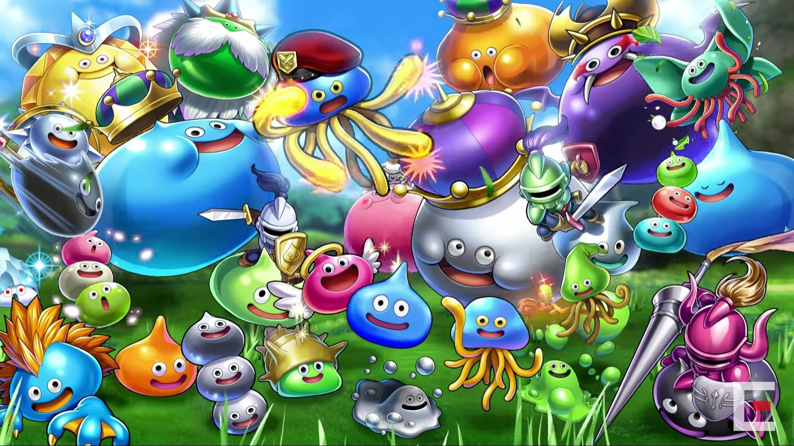
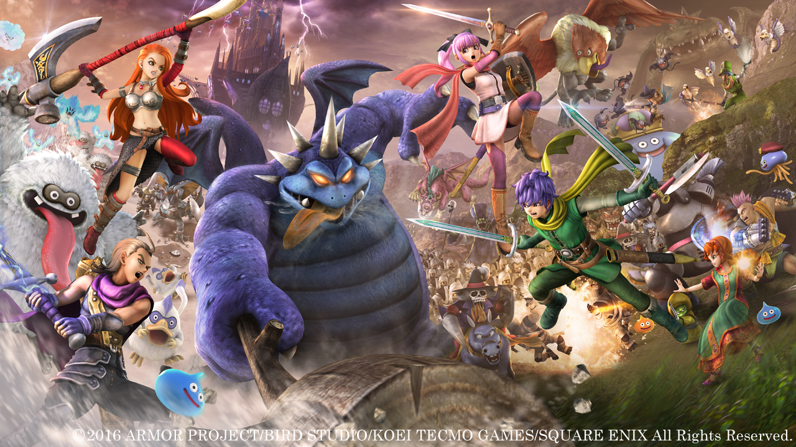

安部 亮佑(Abe Ryosuke)
＜プロフィール＞
現在 静岡聖光学院 高校一年生
出身 鹿児島県鹿児島市
年齢 15歳
誕生日 2007年2月23日
生まれは鹿児島県だが、小学2年の時に静岡県島田市に移動し、静岡大学附属静岡小学校へ転校。そして静岡聖光学院を受験して入学し、今に至る。
↑静岡聖光学院
・趣味、好きなものについて 目次
好きなユーチューバー
好きなゲーム
好きなもの
好きなユーチューバー
好きなゲーム
好きなもの
・好きなユーチューバー SAWAYAN GAMES
・マリオカートの実況がとにかくおもしろい。元気になれる。ぜひみんなに見てほしい。
・好きなゲーム ドラゴンクエスト、ファイナルファンタジー(FF)
 
・ドラクエは現在ドラクエ1〜ドラクエ9までクリア済み。FFも現在FF1からFF8までクリア済み。その中でもドラクエ5とFF6は一番面白かった。
・好きなもの 車（レクサスLS600hl）
昔から車は好きだったが、そのなかでもレクサスLS600は一番好き。特にテールランプがついた時のLの模様がかっこいい。（右の写真）